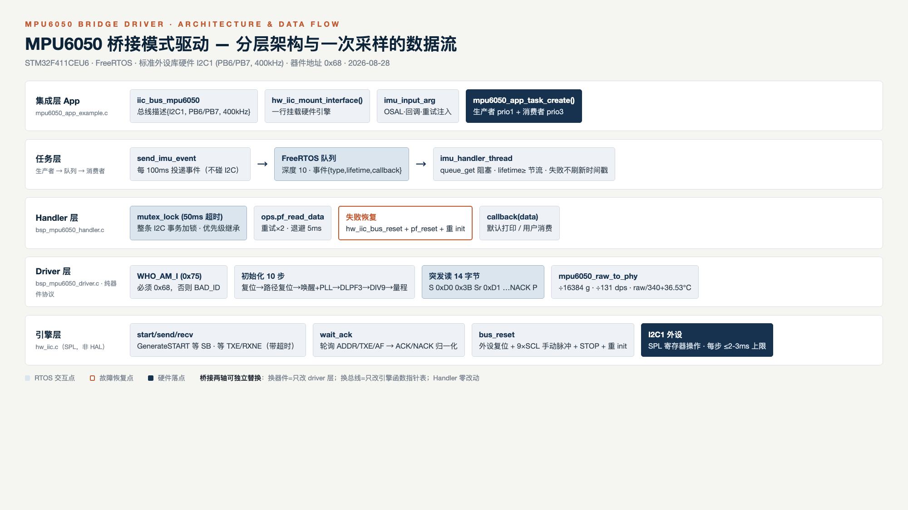

与 AHT21 驱动同一套桥接分层与契约风格，为 STM32F411CEU6 + FreeRTOS 平台实现基于标准外设库（SPL）硬件 I2C 的六轴传感器驱动：WHO_AM_I 先验、十步初始化、14 字节突发读、互斥锁保护、错误自动恢复。
桥接模式两根轴：抽象轴（Handler 编排逻辑）与实现轴（驱动协议 + 总线引擎），通过 instantiate 时挂载的函数指针 ops 表解耦。

| 维度 | AHT21（现有） | MPU6050（本驱动） | 判定 |
|---|---|---|---|
| 驱动实例 | bsp_aht21_driver_t + pf_* ops 表 | bsp_mpu6050_driver_t + 同名 ops（增 pf_read_raw / pf_reset） | 同构 |
| 总线契约 | iic_driver_interface_t（iic_bus_t* 第一参数） | 同一契约头，iic_bus_t 扩展硬件外设字段 | 同一套 |
| Handler 线程 | temp_humi_handler_thread（队列+lifetime+回调） | imu_handler_thread（同构） | 同构 |
| 错误码 | aht21_status_t | mpu6050_status_t（同名风格 + ERRORBUS/BAD_ID） | 一致 |
| Handler 耦合 | 直接持有具体驱动类型（§6.5 债务） | imu_ops_t + void* dev，具名适配函数 | 修复债务 |
| 总线引擎 | 软件位带 I2C（PB13/14） | 硬件 I2C 外设（I2C1） | 实现轴替换 |
驱动层唯一认账的"实现"契约。返回约定：0 = 失败，非 0 = 成功（对齐软件 I2C 的 IICWaitAck 语义）。
| 槽位 | 签名 | 硬件引擎实现语义 |
|---|---|---|
| pf_iic_init / deinit | int32_t (iic_bus_t*) | 时钟+AF 引脚+外设复位+I2C_Init(400k)+Cmd |
| pf_iic_start | int32_t (iic_bus_t*) | GenerateSTART → 等 SB（BUSY 前置检查） |
| pf_iic_stop | int32_t (iic_bus_t*) | GenerateSTOP → 等 BUSY 清零 → 恢复 ACK |
| pf_iic_send_byte | int32_t (iic_bus_t*, u8) | SendData → 等 TXE |
| pf_iic_receive_byte | int32_t (iic_bus_t*, u8*) | 等 RXNE → ReceiveData |
| pf_iic_wait_ack | int32_t (iic_bus_t*) | 轮询 AF→NACK(0)；ADDR→读 SR1+SR2 清除→1；TXE→1；超时→0 |
| pf_iic_send_ack / not_ack | int32_t (iic_bus_t*) | AcknowledgeConfig(ENABLE/DISABLE) 控制下一字节 |
| pf_iic_bus_reset | int32_t (iic_bus_t*) | 外设复位 → 引脚切 GPIO → 9×SCL 脉冲+STOP → 重新 init |
receive(N-1) → send_not_ack → receive(N) → stop 在 400kHz（22.5µs/字节）下调用间隔远小于 1 字节时间，NACK 时序安全。RCC_AHB1PeriphClockCmd(RCC_AHB1Periph_GPIOB, ENABLE); /* 引脚端口 */
RCC_APB1PeriphClockCmd(RCC_APB1Periph_I2C1, ENABLE); /* 外设 */
/* GPIO: AF4 + Open-Drain + Pull-Up + High Speed */
GPIO_PinAFConfig(GPIOB, GPIO_PinSource6, GPIO_AF_I2C1);
GPIO_PinAFConfig(GPIOB, GPIO_PinSource7, GPIO_AF_I2C1);
RCC_APB1PeriphResetCmd(RCC_APB1Periph_I2C1, ENABLE); /* 外设软复位 */
RCC_APB1PeriphResetCmd(RCC_APB1Periph_I2C1, DISABLE);
I2C_InitTypeDef i = { .I2C_ClockSpeed = 400000, .I2C_Mode = I2C_Mode_I2C,
.I2C_DutyCycle = I2C_DutyCycle_2, .I2C_OwnAddress1 = 0x00,
.I2C_Ack = I2C_Ack_Enable, .I2C_AcknowledgedAddress = I2C_AcknowledgedAddress_7bit };
I2C_Init(I2C1, &i); I2C_Cmd(I2C1, ENABLE);
I2C_AcknowledgeConfig(I2C1, ENABLE);实现于 mpu6050_init_impl()。默认 ±2g / ±250°/s / DLPF 44Hz / Fs=100Hz。寄存器依据：RM-MPU-6000A v4.2。
| # | 操作 | 寄存器(地址) | 写入值 | 理由 |
|---|---|---|---|---|
| 1 | 上电稳定等待 | — | 100ms | OSAL 任务态延时（非忙等，规避 AHT21 的 TIM2 忙等债务） |
| 2 | 读 WHO_AM_I | 0x75（读） | 期望 0x68 | 链路连通 + 器件在位双重验证；≠0x68 → MPU6050_STATUS_BAD_ID，终止 |
| 3 | 器件复位 | PWR_MGMT_1 (0x6B) | 0x80 | DEVICE_RESET=1，寄存器恢复默认；位硬件自动清零 |
| 4 | 复位后稳定 | — | 100ms | 数据手册恢复时间 |
| 5 | 信号路径复位 | SIGNAL_PATH_RESET (0x68) | 0x07 | 清加速度/陀螺/温度数字路径 |
| 6 | 唤醒 + 选时钟 | PWR_MGMT_1 (0x6B) | 0x01 | SLEEP=0；CLKSEL=001 → X 轴陀螺 PLL（温漂优于内部 RC） |
| 7 | PLL 锁定等待 | — | 30ms | 唤醒裕量 |
| 8 | DLPF 低通 | CONFIG (0x1A) | 0x03 | DLPF_CFG=3 → 陀螺 44Hz / 加速度 44Hz，噪声与响应折中 |
| 9 | 采样率分频 | SMPLRT_DIV (0x19) | 0x09 | Fs = 1kHz/(1+9) = 100Hz，匹配 100ms 采样周期 |
| 10 | 陀螺量程 | GYRO_CONFIG (0x1B) | 0x00 | FS_SEL=0 → ±250°/s（131 LSB/°/s） |
| 11 | 加速度量程 | ACCEL_CONFIG (0x1C) | 0x00 | AFS_SEL=0 → ±2g（16384 LSB/g） |
主写: S 0xD0 0x3B → 重复起始 Sr
主读: 0xD1 [ax_H ax_L ay_H ay_L az_H az_L t_H t_L gx_H gx_L gy_H gy_L gz_H gz_L] NACK P| 错误码 | 触发 | 处置 |
|---|---|---|
| OK=0 | 成功 | — |
| PARAM | NULL/非法参数 | 检查实例化与入参 |
| NOT_INIT | 未初始化先读 | 先走 instantiate |
| ERRORTIMEOUT | SB/RXNE/BUSY 等待耗尽（≤2-3ms） | 重试×2 → 总线复位 |
| ERRORBUS | 地址/数据 NACK（AF 即时清除） | 重试×2 → 总线复位；查接线/AD0 |
| BAD_ID | WHO_AM_I ≠ 0x68 | 断电查模块/AD0/接线（0x98=9250、0x70=6500，见 FAQ） |
保证：任何读操作必返回（等待均有上限），不会忙等阻塞调度器；任务最长持锁 ≈ 重试总耗时（约 15ms）。互斥锁为 FreeRTOS 互斥量（优先级继承），锁等待超时 50ms；连续失败由 Handler 自动执行 hw_iic_bus_reset → pf_reset → 重 init 自愈。
静态审查证据（真实交叉编译器 arm-none-eabi-gcc 14.3.1，-mcpu=cortex-m4 -mthumb -std=c99 -Wall -Wextra -fsyntax-only，SPL/FreeRTOS 签名一致桩头）：
Core/Src/hw_iic.c [rc=0] 0 警告
BSP/MPU6050/bsp_mpu6050_driver.c [rc=0] 0 警告
BSP/MPU6050/bsp_mpu6050_handler.c [rc=0] 0 警告
integration/mpu6050_app_example.c [rc=0] 0 警告完整链接在用户工程完成（本环境无启动文件与完整 SPL/FreeRTOS 源码树）；桩头仅替换寄存器地址常量，API 签名与真实库一致。
| FAQ | 要点 |
|---|---|
| WHO_AM_I = 0x00/0xFF？ | 接线/上拉/供电问题；0x00 常为 SDA 卡死（驱动会自动走 bus_reset） |
| WHO_AM_I = 0x98 / 0x70？ | 模块实为 MPU9250(0x98)/MPU6500(0x70)；六轴协议基本兼容，改 WHO_AM_I 值与温度系数（6500: raw/333.87+21）即可，务必记入台账 |
| 想改 200Hz？ | 生产者延时 5ms + smplrt_div=4 + lifetime_ms=5 |
| 要姿态角？ | 本次仅原始六轴（范围声明）；融合算法基于 pf_read_data 的 g/°/s 另行设计 |